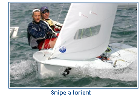

CLASSE SNIPE di Luigi Candela
INTRODUZIONE
Ho scoperto questa classe nel 1986 quando lavoravo come allenatore della squadra giovanile 420 al Circolo Nautico Chioggia.
Quel circolo aveva le sue fondamenta in una cospicua flotta in cui aleggiava uno spirito molto agonistico ma, allo stesso tempo, molto solidale.
Rimasi sorpreso dalla capacit� di questa barca di poter imbarcare equipaggi con pesi diversi e regatare tutti insieme egualmente.
Rimasi sorpreso anche che una barca attrezzata con una randa e un fiocco e nient'altro fosse talmente complessa.
Un contatto pi� ravvicinato lo ebbi sul lago di Garda e scoprii poco a poco quanto questa classe fosse ben organizzata a livello nazionale e mondiale.
STORIA
L'editore della rivista "Rudder" Bill Crosby partecipo` ad una riunione del Florida West Coast Racing Association in risposta alla richiesta di creare una classe di barche da regata trasportabili su carrello.
Disegn� e pubblic� i piani di una barca di questo tipo nella sua rivista.
Il nome Snipe fu scelto secondo la consuetudine
 della rivista "Rudder" di chiamare tutti i suoi disegni dagli uccelli marini ed acquatici ed i piani dello Snipe apparvero nel numero di luglio di "Rudder" che venne esaurito rapidamente.
Ai primi di settembre si ebbe notizia di barche gia' terminate in base ai disegni: La prima fu quella di un ragazzo di 14 anni, Jimmy Brown di Pass Christian, nel Mississippi, che aveva costruito la barca con l'aiuto del padre.
Entro il maggio 1932 erano state registrate 150 barche e le regate si diffusero poiche' molti dei piu' importanti Clubs nautici riconobbero la Classe dandole ufficialmente un inizio. Nel novembre 1932 la Snipe Class International Racing Association (SCIRA) venne costituita con il Dr.Hub E.IsAacks di Dallas - Texas - come Commodoro.
La prima flotta fuori dagli Stati Uniti fu costituita nel marzo 1933 a Dover in Inghilterra. Nel luglio del 1936 la Classe ottenne il riconoscimento di maggiore classe di barche da regata del mondo, con flotte in ogni paese.
Lo Snipe si diffuse gi� negli anni '40 anche in Italia e veniva chiamato spesso Beccacino. Nel 1955 Lorenzo Podest� e Mario Capio vinsero il Campionato del Mondo a Santander.
La diffussione "planetaria" e le simpatie che molti campioni avevano e hanno per questa deriva di mt 4,72 fece si che l'IYRU (l'organizzazione mondiale della vela si chiamava cosi) invit� l'Associazione di Classe a presentare la propria candidatura come classe olimpica. I vertici dell'organizzazione gentilmente rifiutarono perch� ritennero che si sarebbe cambiato lo spirito della classe.
Il tempo gli diede ragione.
Oggi lo Snipe � una delle classi non olimpiche per due persone di equipaggio pi� diffuse al mondo. Raccoglie appassionati principianti e regatanti di alto profilo di entrambi i sessi e tantissimi equipaggi misti che regatano a tutti i livelli. Metto ci� in evidenza perch� si tratta dell'unica classe non olimpica o d'interesse federale che in Italia riesce ad organizzare un Campionato Femminile, un Campionato Juniores e un affollatissimo Campionati Master over 45.
..............continua
|